勉強の道 STEP2 ことばと理論

キャリアコンサルタント学科試験に出る理論家・人物
キャリコン試験の理論家一覧理論家図鑑（66人）
「誰が
サニー先生名前を押すと、その人のページへ。つながりは下の系譜で見られるよ。
印は過去6回（第27〜32回）の出題数から：3回以上 よく出る／1〜2回 ときどき出る／0回 おさえて安心。並びは、出題数の多い順です
 No.07シュロスバーグNancy K. Schlossberg転機(トランジション)の
No.07シュロスバーグNancy K. Schlossberg転機(トランジション)の理論人生の 転機を 「4つの S」で 点検して 乗り切ろうと 教えた 人  よく出る・過去6回で5回
よく出る・過去6回で5回 No.01スーパーDonald E. Superキャリア発達理論キャリアを
No.01スーパーDonald E. Superキャリア発達理論キャリアを「一生かけて 自分らしさを 実現する 旅」と 考えた 人 よく出る・過去6回で4回 No.03クランボルツJohn D. Krumboltz社会的学習理論・
No.03クランボルツJohn D. Krumboltz社会的学習理論・計画された 偶発性「キャリアは 偶然の 出来事で 決まっていい」と 言った 人 よく出る・過去6回で4回- No.04シャインEdgar H. Schein組織心理学・キャリア・アンカー「組織の
中で 働く 人」の キャリアと、 ゆずれない 軸を 考えた 人 よく出る・過去6回で4回 - No.08サビカスMark L. Savickasキャリア構築理論キャリアを
「自分で 語って 作っていく 物語」と 考えた、 21世紀の キャリア理論の 代表格 よく出る・過去6回で4回 - No.13ホールDouglas T. Hallキャリア理論(プロティアン・キャリア)キャリアの
主役は 組織ではなく 自分。 「変幻自在な キャリア」を 提唱した 人 よく出る・過去6回で4回 - No.38バーンEric Berne交流分析(TA)心の
中の 「3人の 自分」で、 人づきあいの クセを 読み解いた 人 よく出る・過去6回で4回  No.06ホランドJohn L. Holland職業選択理論(RIASEC)人と
No.06ホランドJohn L. Holland職業選択理論(RIASEC)人と職場を 6つの タイプに 分けて 「相性」で 考えた 人 よく出る・過去6回で3回 No.10パーソンズFrank Parsons特性因子理論(職業指導の
No.10パーソンズFrank Parsons特性因子理論(職業指導の父)「自分を 知り、 仕事を 知り、 2つを 結ぶ」 ——職業選択の 考え方の 出発点を 作った 人 よく出る・過去6回で3回- No.15アイビイAllen E. Iveyマイクロカウンセリングカウンセリングの
技法を 「階段」の 形に 整理した 人 よく出る・過去6回で3回 - No.31ハーズバーグFrederick Herzberg動機づけ・衛生理論「やる
気が 出る 理由」と 「不満の 理由」は 別ものだ、と 見抜いた 人 よく出る・過去6回で3回  No.02ロジャーズCarl R. Rogersカウンセリング理論(来談者中心療法)「答えは
No.02ロジャーズCarl R. Rogersカウンセリング理論(来談者中心療法)「答えは相談者の 中に ある」と 考え、 聴く ことを 大切に した 人 ときどき出る・過去6回で2回- No.05バンデューラAlbert Bandura社会的学習理論「人は
まねして 学ぶ」 「できそうと 思う 力」を 研究した 人 ときどき出る・過去6回で2回  No.09ジェラットH. B. Gelatt意思決定理論「決め方」を
No.09ジェラットH. B. Gelatt意思決定理論「決め方」を研究し、 後年 「わからない 未来を 前向きに」と 説いた 人 ときどき出る・過去6回で2回- No.17エリスAlbert Ellis論理療法(REBT)「出来事」ではなく
「受け取り方」が 悩みを つくる、と 説いた 人 ときどき出る・過去6回で2回  No.30マズローAbraham H. Maslow人間性心理学(欲求階層説)人の
No.30マズローAbraham H. Maslow人間性心理学(欲求階層説)人の欲求を 5段の ピラミッドで 説明した、 自己実現の 心理学者 ときどき出る・過去6回で2回
No.11エリクソンErik H. Erikson心理社会的発達理論人生を8つの 階段に 分けて、 それぞれの 「宿題(発達課題)」を 示した 人 ときどき出る・過去6回で1回- No.14ブリッジスWilliam Bridges転機(トランジション)の
理論転機は 「終わり」から 始まる、と 説いた 人 ときどき出る・過去6回で1回 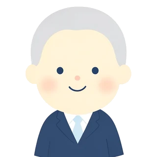
No.16國分康孝Yasutaka Kokubuカウンセリング(折衷主義・コーヒーカップ・モデル)面接の流れを 「コーヒーカップ」の 形で 表し、 日本の カウンセリングを 育てた 人 ときどき出る・過去6回で1回- No.18ハンセンL. Sunny Hansen統合的人生設計(ILP)仕事だけでなく
「愛・学習・労働・余暇」を 織り合わせて 人生を 設計しようと 説いた 人 ときどき出る・過去6回で1回 - No.24ヒルトンThomas L. Hilton意思決定理論(認知的不協和)「心の
つじつまが 合わない モヤモヤ」を 解消する 形で 職業を 決める、と 考えた 人 ときどき出る・過去6回で1回 
No.28フロイトSigmund Freud精神分析心の奥の 「無意識」が 行動を 動かしている、と 考えた 心理学の 大家 ときどき出る・過去6回で1回- No.36ウォルピJoseph Wolpe行動療法(系統的脱感作法)「こわい
ものには、 リラックスしながら少し ずつ 慣れる」方法を 作った 人 ときどき出る・過去6回で1回 - No.37パールズFrederick S. Perlsゲシュタルト療法「いま、
ここ」の 気づきを 大切に する 心理療法を 作った 人 ときどき出る・過去6回で1回 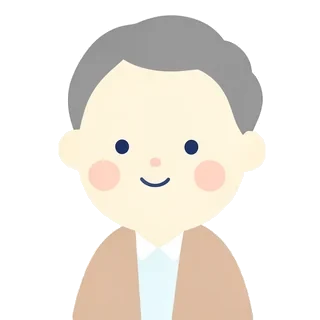
No.41ジェンドリンEugene T. Gendlinフォーカシング言葉になる 前の 「からだの 感じ」に 耳を すます方法を 作った 人 ときどき出る・過去6回で1回- No.58フランクルViktor E. Franklロゴセラピー(意味に
よる 治療)「人は 意味を 求める 存在だ」と して、 意味に focus した 心理療法を 作った 人 ときどき出る・過去6回で1回 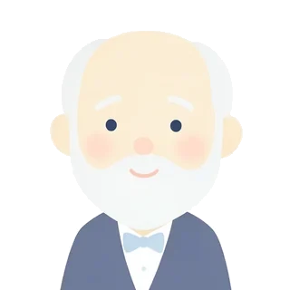
No.64マクレランドDavid C. McClelland達成動機理論・コンピテンシー人を動か す動機を 3つに 整理し、 コンピテンシーの 考え方を 広めた 人 ときどき出る・過去6回で1回- No.12レビンソンDaniel J. Levinson成人発達理論(人生の
四季)人生を 四季にたとえて、 「季節の 変わり 目(過渡期)」の 大切さを 説いた 人 おさえて安心 - No.19ギンズバーグEli Ginzberg職業発達理論(先駆)「職業選びは
一回きりでなく、 発達していく 過程だ」と 最初に 唱えた 先駆者 おさえて安心 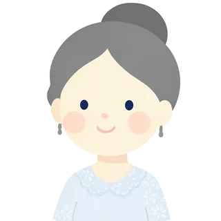
No.20ローAnne Roe早期決定論(欲求理論)子ども時代の 親子関係が、 将来えらぶ仕事に 影響すると 考えた 人 おさえて安心- No.21ウィリアムソンE. G. Williamson特性因子カウンセリングパーソンズの
マッチング理論を、 6段階の カウンセリングに 体系化した 人 おさえて安心 - No.22ゴットフレッドソンLinda S. Gottfredson限界と
妥協の 理論人は 成長の 中で 職業の 選択肢を 「せばめ」、 現実に 合わせて 「妥協」すると 考えた 人 おさえて安心  No.23ティードマンDavid V. Tiedeman意思決定理論キャリアの
No.23ティードマンDavid V. Tiedeman意思決定理論キャリアの決断を 「自分らしさが 分かれて、 まとまっていく 過程」と 見た 人 おさえて安心- No.25ハヴィガーストRobert J. Havighurst発達課題「発達課題」と
いう 言葉を 広めた、 人生の 宿題の 先生 おさえて安心 
No.26ニコルソンNigel Nicholsonトランジション・サイクル転職や異動への 慣れ方を 「4つの 段階が めぐる サイクル」で 説明した 人 おさえて安心- No.27ユングCarl G. Jung分析心理学「人生の
正午」 ——40歳ごろは 人生の 折り返しの 大切な 転機だと 考えた 人 おさえて安心 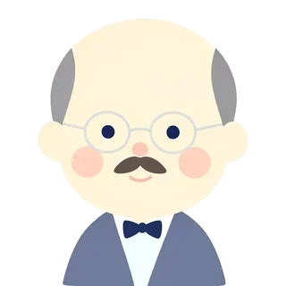
No.29アドラーAlfred Adler個人心理学劣等感は成長の バネに なる、と 考えた 「勇気づけ」の 心理学者 おさえて安心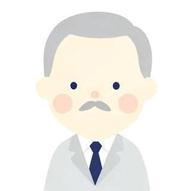
No.32マクレガーDouglas McGregorX理論・Y理論「人をどう 見るか」で マネジメントが 変わる、と 説いた 人 おさえて安心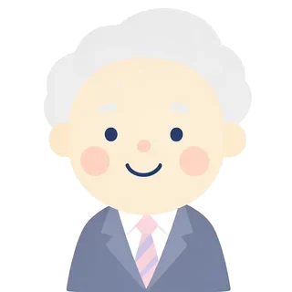
No.33ヴルームVictor H. Vroom期待理論やる気は 「できそう ×ほしい」の かけ算で 決まる、と 考えた 人 おさえて安心- No.34デシEdward L. Deci内発的動機づけ(自己決定理論)「やりたいから
やる」気持ちの 大切さを 実験で 示した 人 おさえて安心 - No.35スキナーB. F. Skinner行動主義(オペラント条件づけ)「ほめられた
行動は 繰り返される」しくみを 実験で 示した 人 おさえて安心 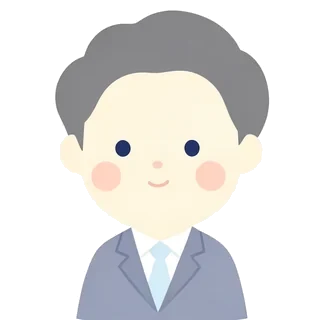
No.39ベックAaron T. Beck認知療法「ぱっと浮かぶ 考え方の クセ」に 気づいて 直す治療法を 作った 人 おさえて安心- No.40グラッサーWilliam Glasser現実療法(選択理論)「行動は
自分で 選べる」ことに 目を 向けさせる 療法を 作った 人 おさえて安心 - No.42カーカフRobert R. Carkhuffヘルピング相談の
進め方を 「かかわる →応答する →意識化する →手ほ どきする」に 体系化した 人 おさえて安心 - No.43ド・シャザーと
バーグSteve de Shazer & Insoo Kim Berg解決志向アプローチ問題の 原因さが しより 「解決した 未来」から 考える 方法を 作った 2人 おさえて安心 - No.44ボウルビィJohn Bowlby発達心理学(愛着理論)「特定の
人との 情緒的な 絆(愛着)」が 心の 土台に なる、と 示した 愛着理論の 生みの 親 おさえて安心 - No.45ピアジェJean Piaget発達心理学(認知発達)子どもの
考える 力は 4つの 段階を 追って 育つ、と 示した 認知発達理論の 巨人 おさえて安心 - No.46ヴィゴツキーLev S. Vygotsky発達心理学(社会文化的アプローチ)「ひとりで
できる こと」と 「助けが あればできる こと」の 間に 成長の 芽が ある、と 考えた 学者 おさえて安心 - No.47キューブラー・ロスElisabeth Kübler-Ross死生学・悲嘆の
プロセス大きな 喪失を 受け入れるまでの 「心の 5段階」を 示した 精神科医 おさえて安心 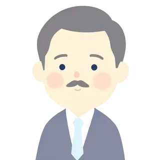
No.48テイラーFrederick W. Taylor経営管理論(科学的管理法)「勘と経験」だった 働き方を、 時間と 動作の 科学で 管理した 経営学の 出発点 おさえて安心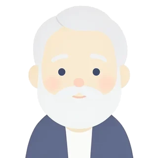
No.49パブロフIvan P. Pavlov古典的条件づけ犬の実験で 「条件反射」を 見つけ、 行動を 科学的に 扱う道を 開いた 人 おさえて安心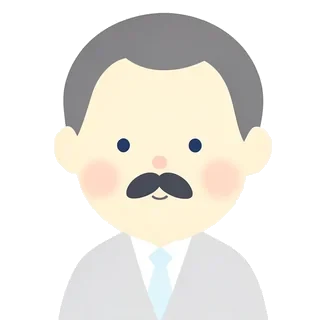
No.50ソーンダイクEdward L. Thorndike試行錯誤学習・効果の法則「うまく いった 行動は 繰り返される」と いう 学習の 法則を 示した 人 おさえて安心- No.51ワトソンJohn B. Watson行動主義「心理学は
目に 見える 行動だけを 扱うべきだ」と 宣言した、 行動主義の 旗ふり役 おさえて安心 - No.52フッサールEdmund Husserl現象学「その
ことを 本人は どう 体験しているか」に 立ち返ろうとした 哲学者 おさえて安心 - No.53ブリルAbraham A. Brill精神分析(アメリカへの
紹介)フロイトの 著作を 英語に 訳し、 精神分析を アメリカに 広めた 人 おさえて安心 - No.54アンナ・フロイトAnna Freud自我心理学・児童精神分析防衛機制を
整理し、 子どもの 精神分析を 切り 開いた フロイトの 娘 おさえて安心 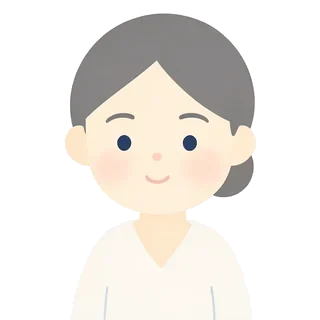
No.55ビューラーCharlotte Bühler生涯発達心理学の先駆人生全体を 段階で 捉える 見方を、 早い 時期に 示した 人 おさえて安心- No.56ビンスワンガーLudwig Binswanger現存在分析哲学の
考えを 精神医学に 取り入れ、 現存在分析を 始めた 人 おさえて安心 - No.57ボスMedard Boss現存在分析現存在分析を、
実際の 治療に 使える 形に 整えた 人 おさえて安心 - No.59ロロ・メイRollo May実存療法実存的な
考え方を アメリカの 心理療法に 持ち込んだ 人 おさえて安心 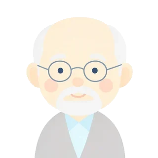
No.60ヤーロムIrvin D. Yalom実存的心理療法・集団精神療法実存療法と 集団療法を、 現代の 臨床に まとめ上げた 人 おさえて安心- No.61レヴィンKurt Lewinグループダイナミックス・場の
理論「人の 行動は、 その 人と 環境の 関係で 決まる」と 示した 社会心理学の 父 おさえて安心 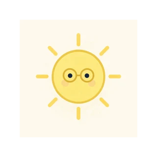
No.62ボーディンEdward S. Bordin作業同盟・精神力動的キャリアカウンセリングカウンセラーと 相談者の 「協力関係」を、 作業同盟と して 理論化した 人 おさえて安心- No.63ブロンフェンブレナーUrie Bronfenbrenner生態学的システム理論人の
発達を、 いくつもの 環境が 入れ子に なった全体と して 捉えた 人 おさえて安心 
No.65バンマーネンJohn Van Maanen組織社会化新しく入った 人が 組織に 馴染んでいく 過程を、 組織社会化と して 研究した 人 おさえて安心- No.66プレディガーDale J. Predigerワークタスク次元ホランドの
6角形の 奥に ある、 2つの 軸を 示した 人 おさえて安心
似顔絵は当サイト作成のイメージイラストです。
モヤンスーパーと

サニー先生だいじょうぶ。
理論家の系譜
誰から誰へ、つながりで覚える
次の一歩